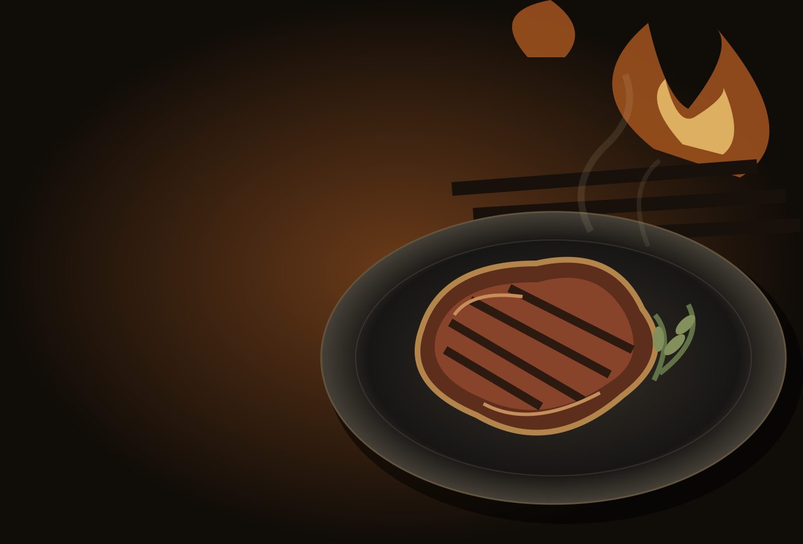

Where Fire
Meets Finesse
A steakhouse built on craft, fire, and a reverence for the ingredient.
Our Philosophy
Every dish that leaves our kitchen begins with a single question: does this do justice to what the land provided? Our concept celebrates family-owned ranches, farms, and fisheries.
Our wood-fired hearth burns white oak and cherry, chosen for the smoke profile they lend to each cut. Every dish is a conversation between heat, time, and restraint.
We don't over-garnish. We don't over-explain. We trust the ingredient — and we trust you.
CHERRY WOOD
TIME.The simplest things,
done exceptionally.
Marcus DeLeon
“I cook the way I want to eat —
honestly, without apology.”
A fictional executive chef for this restaurant concept, leading a kitchen that believes cooking is an act of devotion — not decoration.
An Evening
All Your Own
A considered setting for corporate dinners, celebrations and intimate gatherings. Custom menus, a dedicated sommelier, and room for conversation.
8–22 GUESTS · FULL AV · MENUS FROM $95PP
SET THE TABLE.
MAKE IT YOURS.
Heat. Time. Restraint.
We let the fire do its work, and the ingredient tell its story.
Editorial concept notes, not guest or press reviews.
Reserve Your Table
We look forward to welcoming you.